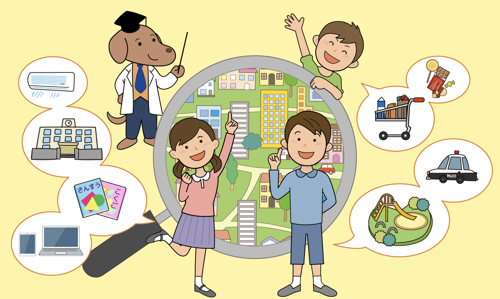

よりよい社会の実現のため
高等学校公民科租税教育資料 ＜福井県版＞

お使いのブラウザは動画再生に対応していません。
INDEX
1. 生活に関わる税
2. 税金の種類
3. 人生の出来事と税
4. 消費税の納め方
5. 世界の消費税
6. 税金の流れと納め方
7. ふるさと納税
8. 一人当たりの教育費
9. 税金の使われ方
10. 一日の中での税金の使われ方
11. 納税の義務とは
12. 町に橋をかけよう
13. 税の公平性
14. 税金の使いみちの決め方
15. 税の使い道を考えよう
16. 日本村の予算を作ろう
17. 国の予算を見てみよう
18. 国の財政を見てみよう
19. 財政の悪化
20. 社会保障費の増加
21. 増え続ける社会保障費
22. 日本の借金の状況
23. 給付と負担のバランスとは
24. プライマリーバランスとは
25. 累進課税とは
26. 税を通して選挙を考えよう
27. 日本の将来と税金を考える
28. 国税庁ホームページの紹介